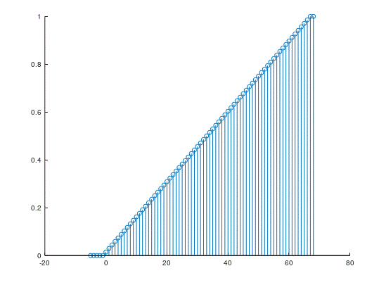

Study 2: Time
Domain
|
Name(s):
Arsi Arola
Mikko Larke
|
ID(s):
1706768
1805833
|
Deadline: Lab 3
|
Read the lab instructions first!
|
Number |
Write your answer in this column |
Questions |
Hints |
|
1 |
SS = 68 s = 1/SS * ones(1,SS); |
Generate
an impulse response function of a running average filter with length SS. (Note: only two last digits of your usual SSS). |
ones |
|
2 |
u = @(n) (n >= 0); SS = 68 n = [-5:SS]; h = 1/SS * ones(1,SS); stem(n, filter(h,1,u(n)));  |
Filter-function
is an implementation of a linear, time-invariant system in Octave. It can be
used to produce output of a FIR-system the following way: |
filter |
|
3 |
Write
commands here! d = @(n)
(n == 0) n = [0:SS]; y1 =
filter([zeros(1,SS) 1], 1, d(n)) stem([1: length(y1)], y1);
|
An easy
way to produce a delayed signal in Octave, is to use the filter-function the
following way: |
filter |
|
|
n = [-5:SS]; y = @(x, n) (x .* exp(n)); b = rand(1, 1) y1 = y(a*x1 + b*x2, n) y2 = a*y(x1, n) + b*y(x2, n) stem(n,y1) hold on stem(n,y2) // visual comparison stem(y1 == y2) // Concrete comparison of the two functions, we can
see that the values match in
almost every case and when they dont match that is due the limitations of computer handling numbers with limited precision. We
can also see from the visual comparison that actually the values are
basically the same. è Linear system |
Use appropriate test vectors to check
if the system y[n] = x[n]*en is Linear |
Linearity: use two, random test vectors x1
and x2, and two random numbers to see if |
|
4 b |
D = [zeros(1,5) 1] n = [-5:SS]; x1 = rand(1, length(n)) y1 = filter(D, 1, y(x1, n)) y2 = y(filter(D, 1, x1), n) stem(n,y1) hold on stem(n,y2) stem(y1 == y2) // y1 and y2 are not equal at all points so the
system is time NOT invariant |
Time Shift Invariant |
Time-shift
invariance:
use step function to see if time shifted input results in an output equal to
time shifted original output |
|
4 c |
Justified
answer required! range = [0:SS]; n = [-length(range): -1] x1 = rand(1, length(n)) stem(y(u(n) .* x1, n) == 0) % n < 0 // We can see that at every single point in the
“F{u[n]*q[n]} == 0 , when n < 0”
results 1 meaning true so all values were equal to 0 and the system IS
causal |
Causal |
Causality: use a random signal, which
starts at origin as your test signal to see if the system gives non-zero
output before input |
|
4 d |
Justified
answer required! n = 0:50; y1 = abs(y(u(n), n)) stem(y1) // Looking at the graph we can see that the system
output increases as n increases so the system approaches infinity and is NOT stable |
Stable |
Stable: test, if the step response
converges |
|
5 |
Insert
the graph of impulse response function here. SS = 68; n = 0:SS; a = [1 0.5 0]; b = [1 -1.2 1]; impulse = [1 zeros(1,SS)]; response = filter(b,a,impulse); stem(n,
response); The system is IIT system because of the past output
sample
|
System
difference equation is: |
filter |
|
6 |
Write
commands here function y = delta(n) y = n == 0 endfunction |
Write an
m-function, which returns discrete delta function values for a given index
vector. |
|